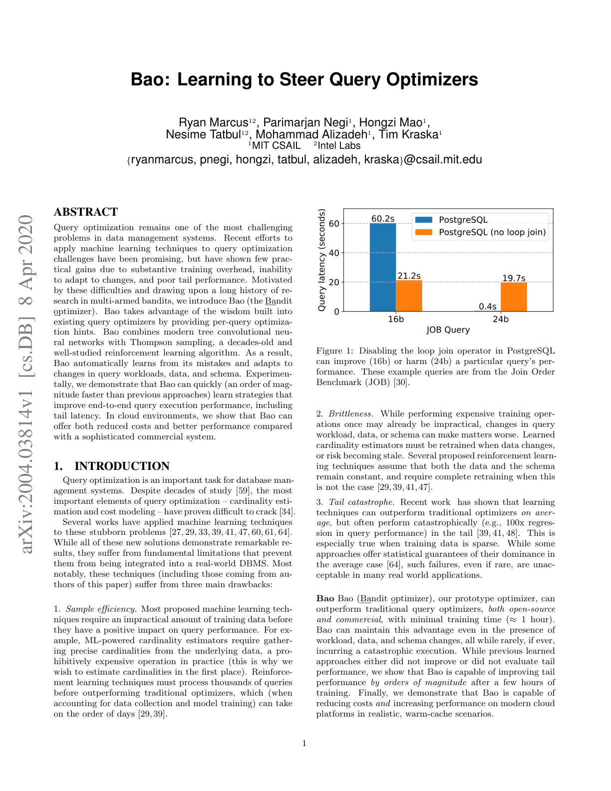
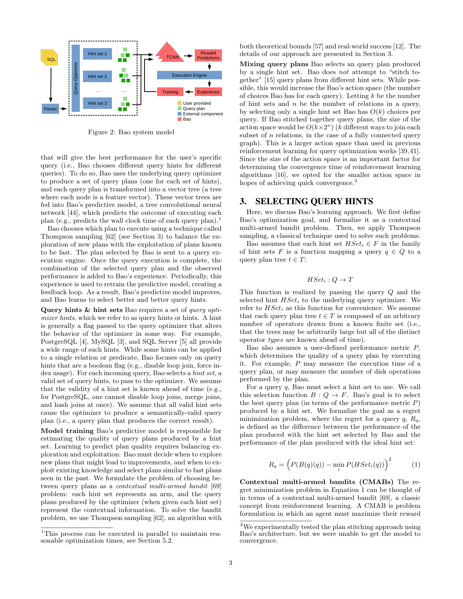
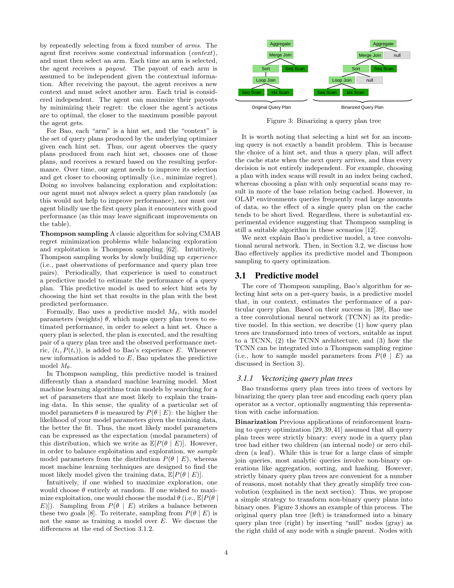
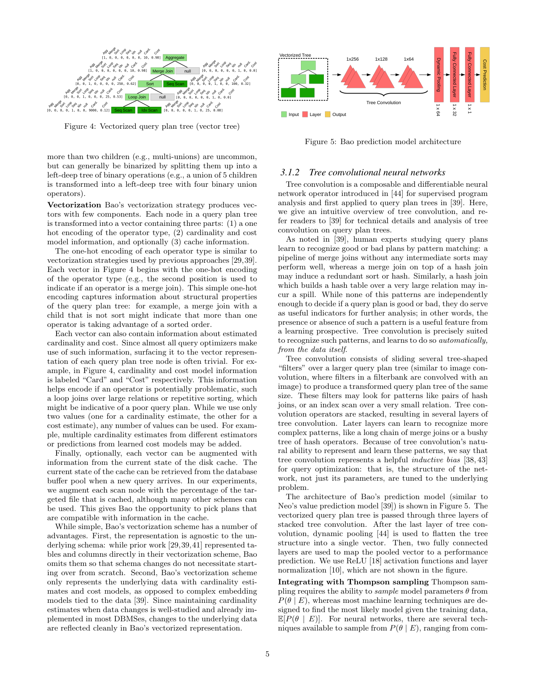
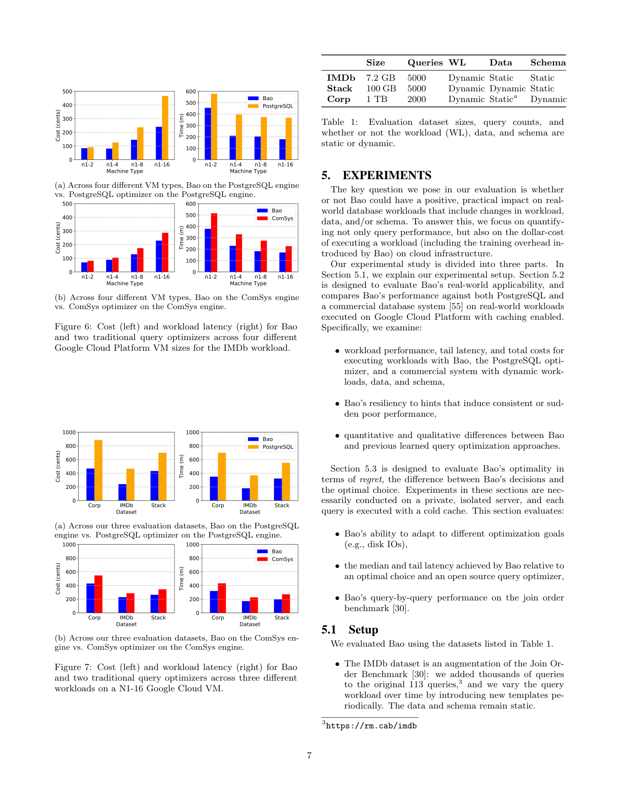
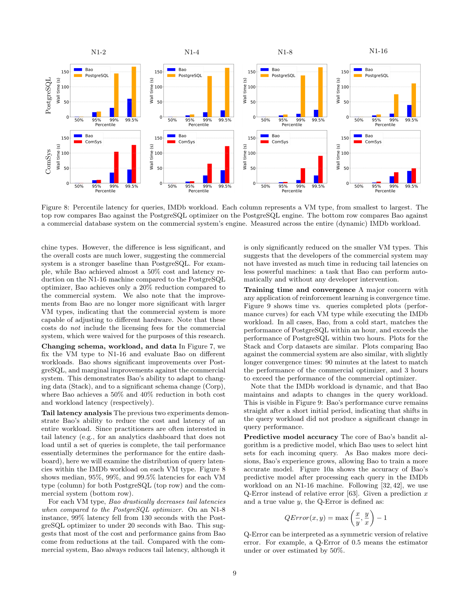

基于上下文多臂老虎机与树卷积神经网络的学习型查询优化系统
查询优化始终是数据管理系统中最具挑战性的问题之一。近年来，将机器学习技术应用于查询优化的尝试颇有前景，但由于训练开销巨大、无法适应变化、以及尾部性能差等根本性缺陷，这些方案少有实际收益。受多臂老虎机（multi-armed bandit）领域悠久研究的启发，我们提出了 Bao（Bandit Optimizer，老虎机优化器）。
Bao 通过为每条查询提供优化器提示（hint），充分利用了现有查询优化器中沉淀的「工程智慧」。Bao 将现代树卷积神经网络（Tree CNN）与 Thompson Sampling（一种历经数十年研究、理论成熟的强化学习算法）相结合。由此，Bao 能够自动从错误中学习，并适应查询负载、数据与模式（schema）的变化。
实验表明，Bao 能够极快（比此前方法快一个数量级）地学习到提升端到端查询执行性能（包括尾部延迟）的策略。在云环境中，我们进一步展示 Bao 相比某商业系统既能降低成本又能提升性能。
查询优化对数据库管理系统至关重要。尽管历经数十年研究，查询优化最核心的两个环节——基数估计（cardinality estimation）与代价建模（cost modeling）——始终难以攻破。已有众多工作尝试用机器学习解决这些难题，但它们普遍存在三个根本性局限，使其难以集成进真实 DBMS：

Bao 的核心观察：以往尝试用学习组件替换整个（或大部分）查询优化器的工作，可能「把孩子和洗澡水一起倒掉了」。Bao 认识到传统优化器沉淀了数十年的精心编码智慧，因此不再丢弃它们，而是在现有优化器之上提供粗粒度 hint 来「引导」其方向。例如，PostgreSQL 常因基数低估而错误地选择 loop join；对某些查询禁用 loop join 有益，对另一些则有害。Bao 的目标就是为不同查询学习选择不同的 hint 子集。
具体而言，Bao 位于现有优化器之上，将问题形式化为一个上下文多臂老虎机（contextual multi-armed bandit）：每个 hint 子集（hint set）视为一个「臂（arm）」。系统学习一个预测模型，判断哪组 hint 对某条查询性能最好；查询到来时选择 hint、执行并观察奖励，逐步精炼模型。由于站在传统优化器肩膀上，Bao 天然具备代价/基数估计能力，能像底层优化器一样适应数据与模式变化，并能降低尾部延迟。
Bao 还具备若干工程优势：易于融入 DBMS 缓存信息（只需暴露缓存状态描述）；相比黑盒深度学习更易调试（工程师可检查 Bao 所选 hint，必要时写例外规则）；架构可扩展（增减 hint 只需极少额外训练）。
在方法上，Bao 将树卷积模型（TCNN）与 Thompson Sampling 相结合。本文贡献包括：(1) 提出 Bao，一个能按查询逐例学习应用 hint 的学习型系统；(2) 提出与工作负载/数据/模式无关的简洁预测模型与特征化方案；(3) 首次展示一个在成本与延迟上同时超越开源与商业系统、并能适应负载/数据/模式变化的学习型查询优化系统。
Bao 的系统模型如图 2 所示。用户提交查询后，Bao 的目标是为该特定查询选择一组能带来最佳性能的 hint 集。Bao 利用底层优化器为每个 hint 集生成一份查询计划，并将每份计划转换为向量树（vector tree）（每个节点是一个特征向量），输入到树卷积神经网络预测模型中，预测每份计划的执行结果（如墙钟时间）。随后 Bao 用 Thompson Sampling 在选择「探索新计划」与「利用已知快速计划」之间取得平衡，选中的计划送入执行引擎；执行完成后，该计划与观测性能被加入 Bao 的「经验（experience）」，并周期性地用于重训预测模型，形成反馈闭环。

查询 hint 与 hint 集：hint 是传给优化器、改变其行为的标志（如禁用 loop join、强制使用索引）。Bao 仅关注布尔型 hint。每条查询，Bao 选择一个hint 集（一组合法 hint）传给优化器，并假设所有合法 hint 集都能产生语义正确的计划。
模型训练：Bao 的预测模型负责估计某 hint 集所生成计划的质量。该问题被形式化为上下文多臂老虎机——每个 hint 集是一个臂，优化器给出的计划树是上下文信息；Bao 用 Thompson Sampling 求解，兼具理论保证与实际成功。
为何不「拼接」计划：Bao 只选单个 hint 集产生的计划，而非把不同 hint 集的计划「缝合」在一起。设 hint 集数为 $k$、查询关系数为 $n$，仅选单个 hint 集使 Bao 每查询只有 $O(k)$ 种选择；若缝合，动作空间将膨胀到 $O(k \times 2^n)$，远大于以往强化学习方案的规模。由于动作空间大小直接决定收敛速度，Bao 选择更小的动作空间以快速收敛。
本节形式化 Bao 的优化目标，并将其建模为上下文多臂老虎机，再应用 Thompson Sampling 求解。
设 hint 集族 $\mathcal{F}$ 中每个 $HSet_i$ 是将查询 $q$ 映射到计划树 $t$ 的函数（由底层优化器实现）。用户定义性能指标 $P$（如执行时间、磁盘操作数）。Bao 的选择函数 $B: \mathcal{Q}\to\mathcal{F}$ 的目标是选出使 $P$ 最优的计划。我们将目标形式化为遗憾最小化（regret minimization）问题，查询 $q$ 的遗憾定义为 Bao 所选计划与理想 hint 集所生成计划之间的性能差：
在上下文多臂老虎机（CMAB）中，智能体反复从固定数量的臂中选择，先接收上下文，再选臂并获得收益；目标是通过最小化遗憾来最大化收益。对 Bao 而言，每个「臂」是一个 hint 集，「上下文」是底层优化器针对各 hint 集生成的计划树集合。Thompson Sampling 通过逐步积累「计划树—性能」观测经验，周期性据此构建预测模型来选臂；关键在于它不是训练出「最可能」的模型参数 $\mathbb{E}[P(\theta|\mathcal{E})]$，而是从后验分布 $P(\theta|\mathcal{E})$ 中采样参数——这在探索与利用之间取得平衡。

Bao 的预测模型采用树卷积神经网络（TCNN）。首先需将查询计划树转化为向量树：

树卷积：将若干树形「滤波器」在更大的计划树上滑动（类比图像卷积），产生同尺寸变换树；多层堆叠后，深层可识别更复杂模式（如长链 merge join、bushy 哈希树）。这种对查询优化天然适用的归纳偏置（inductive bias）是 TCNN 的优势。与 Thompson Sampling 集成：最简单且实践证明有效的做法是 bootstrap（自助采样）——用从经验 $\mathcal{E}$ 中有放回抽取的 $|\mathcal{E}|$ 个样本训练网络，从而诱导出所需的参数采样特性。
Bao 的训练循环遵循经典 Thompson Sampling 体制：查询到达 → 为每个 hint 集构建计划树 → 用当前 TCNN 选计划执行 → 计划树与观测性能加入经验 → 周期性重训 TCNN（采样参数以平衡探索/利用）。
针对实际约束做两处偏离：(1) 经典 Thompson Sampling 每选一次就重采样参数，但训练神经网络耗时且经验无限增长会使训练时间无界；因此 Bao 每 $n$ 条查询才重采样一次参数，并只保留最近 $k$ 条经验，由用户按需在模型质量与训练开销间权衡。(2) 在现代云平台（按秒计费的 GPU 可随时挂载/卸载），模型训练（用 GPU）与查询处理（用 CPU/磁盘/RAM）可重叠：需采样参数时临时挂载 GPU 训练，完成后换入新参数并卸载 GPU。
基数估计：最早的方法 Leo 用相似查询的多次运行调整直方图估计；近年的深度学习方法（如 Naru 用无监督+蒙特卡洛积分）在单表上取得合理估计，但均未证明估计精度的提升能转化为查询性能的提升。Ortiz 等人的实验研究表明，某些学习型基数估计在特定数据集上可改善平均性能，但未评估尾部延迟。
强化学习构造优化器：多个工作表明，在充分训练后此类方法能找到按 PostgreSQL 代价更低的计划；Neo 首次将深度强化学习直接用于查询延迟，训练 24 小时后可达到与商业系统竞争的策略。但它们都无法处理模式/数据/负载的变化，且只展示了长训练后的平均性能改善，未展示尾部性能改善。
Thompson Sampling 在统计与决策领域历史悠久，近期被广泛用于强化学习中基于经验更新信念的高效手段；也被应用于云负载管理与 SLA 合规。更广义地，强化学习还被用于弹性集群管理、调度与物理设计。Bao 属于「用机器学习构建易用、自适应、创新系统」的机器编程（machine programming）趋势。
核心问题：Bao 能否对包含负载/数据/模式变化的真实数据库负载产生正向、实际的影响？我们不仅量化查询性能，还量化在云基础设施上执行负载的美元成本（含 Bao 引入的训练开销）。
实验分三部分：(1) 实验设置（§5.1）；(2) 真实世界适用性（§5.2），在启用缓存的 GCP 上对比 PostgreSQL 与某商业系统，考察负载性能、尾部延迟、总成本、对劣化 hint 的鲁棒性，以及与以往学习型方法的差异；(3) 最优性/遗憾评估（§5.3），在隔离冷缓存服务器上评估 Bao 适应不同优化目标、相对最优选择与开源优化器的中位/尾部延迟，以及在 JOB 上的逐查询表现。
评估数据集如表 1 所示：
训练/测试采用「时间序列切分」：Bao 始终在从未见过的下一条查询 $q_{t+1}$ 上评估，且仅用更早查询的数据训练，执行后只将该次决策的奖励加入经验。这与以往强化学习可针对同一查询探索多种决策不同，更贴近真实（执行一次后不再获得替代计划信息）。
预测模型用三层树卷积（输出维度 256/128/64）+ 动态池化 + 两层线性（32/1），ReLU 与层归一化，Adam 训练（batch 16，至 100 epoch 或收敛）。除非特别说明，使用 48 个 hint 集的族（连接算子 {hash, merge, loop join} 与扫描算子 {seq, index, index-only} 的子集），回看窗口 $k=2000$、每 $n=100$ 条查询重训，在 GPU 时间与查询性能间取得良好折中。
本节在 GCP 上评估 Bao，并为每个叶子节点向量补充缓存信息（通过商业系统内部表与 PostgreSQL 的 pg_buffercache 扩展获取文件缓存比例）。

云上的成本与性能：图 6a 显示，在各类 VM 规格上 Bao 同时实现更低成本与更低负载延迟。例如在 N1-16 上，Bao 将成本降低超 50%（从 $4.60 降至 $2.20），并将总负载时间从逾 6 小时压缩到 3 小时出头；GPU 租赁费用已被查询性能提升所弥补。差异在更大 VM 上更显著，说明 Bao 比 PostgreSQL 更擅长针对不同硬件自我调优。图 6b 对比商业系统时，Bao 在四种机型上仍实现更低成本与延迟，但差异较小、整体成本更低，表明商业系统是更强的基线（在 N1-16 上 Bao 仅比其降低约 20%）。

模式/负载/数据变化：图 7 固定 N1-16，考察不同负载。Bao 相对 PostgreSQL 有显著提升，相对商业系统有边际提升。原文进一步展示 Bao 对引发持续或突发劣化性能的 hint 具有鲁棒性，并在定量/定性上与以往学习型查询优化方法存在明显差异（Bao 训练约 1 小时即可见效，而以往方法需数天）。
该部分在私有隔离服务器、冷缓存下评估，考察：(1) Bao 适应不同优化目标（如磁盘 I/O 次数）的能力；(2) 相对最优选择与开源优化器的中位/尾部延迟；(3) 在 JOB 上的逐查询表现。实验验证了 Bao 能快速收敛到接近最优的 hint 选择，且尾部延迟显著优于传统优化器。
Bao 通过将学习型组件构建在传统查询优化器之上（而非替换之），并用上下文多臂老虎机框架 + 树卷积神经网络 + Thompson Sampling 来按查询自适应地选择粗粒度 hint，成功规避了以往学习型优化器「训练开销大、无法适应变化、尾部灾难」三大缺陷。它仅需约 1 小时训练即可在端到端查询性能（含尾部延迟）上超越开源乃至商业系统，并能持续适应负载、数据与模式的变化；在云环境中还实现了成本与性能的双赢。
Bao 的设计哲学——「站在优化器肩膀上、用 hint 引导而非重写」——为学习型数据库系统提供了一条务实、可调试、可扩展的落地路径。